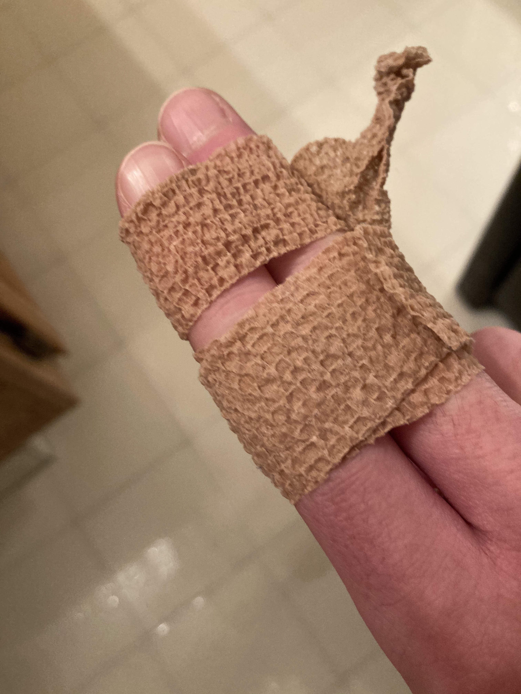

Around five days ago, the pointer finger of my right hand became painful. I knew immediately that the pain was a result of my poor typing habits, so I stopped typing. A couple of days later, I visited my doctor. He told me to rest my hands, buddy-tape my middle and pointer finger, and take ibuprofen. Going without using my computer, and running for that matter, I rested my hands. Soon enough the tendonitis was not that bad, and I regained mobility and shed pain.

Now that I have resumed use of my computer, I have adopted some new habits, ideally preventing the flaring up of anything again.
I will: